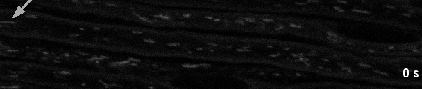
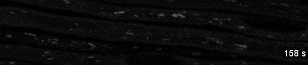
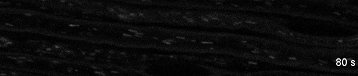
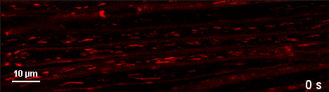
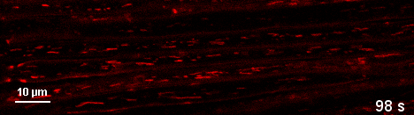
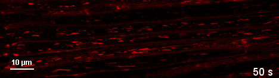

Chapter23 · organelle cargo and electrical signals use different clocks
Watch organelles move inside peripheral axons
These are two independent publication movies from adult mouse saphenous nerves. They show fluorescent mitochondrial profiles along axons. They do not show an action potential, human nerve recovery or the molecular stepping of kinesin and dynein.
Read distal as toward the foot, screen-right and proximal as screen-left, following the source captions. Compare stationary and moving profiles within each movie. The separate examples are not a matched before/after experiment; their brightness and field sizes are not directly comparable quantitative outcomes.
1 · During50Hz electrical stimulation
Source VideoS1: an exposed, de-sheathed mouse saphenous nerve under proximal50Hz stimulation, with compound action potentials recorded distal to the imaging site. The publication presents this fluorescence signal in grayscale. Its original arrow and embedded clock remain intact.






Sajic et al.(2013), PLOS Biology11:e1001754, VideoS1, supplement s004, CC BY4.0 as linked by the owning article. Exact original AVI retained; lossless RGB browser delivery and native PNG samples extracted without cropping, enhancement or synthetic frames. Exact hashes and reproduction.
2 · A naive animal without deliberate stimulation
Source VideoS2: a different mouse preparation without deliberate electrical stimulation. The red display is fluorescence-channel colour, not natural tissue colour. The original10µm bar and embedded source clock are retained.






Sajic et al.(2013), PLOS Biology11:e1001754, VideoS2, supplement s005, CC BY4.0. Original AVI and every decoded RGB frame are preserved by the lossless delivery. Exact source and media record.
Do not confuse the three clocks
- Electrical stimulation:50Hz describes the impulse train in the stimulated preparation; it is not the movie frame rate or mitochondrial transport speed.
- Acquisition/source clock: the methods report1.97s per acquired frame. The movie overlays advance in rounded2s increments. Read the preserved source clock for experiment timing; no more precise time mapping is imposed here.
- Playback clock: VideoS1 has80frames at8fps, lasting10s. VideoS2 has50frames at10fps, lasting5s. The controls show these encoded-file seconds. The rounded source clocks advance approximately16× and20× at default playback, respectively;0.5×/2× changes viewing speed only.
No voltage waveform, molecular motor contact, ATP-coupling reaction, live myelin repair, complete axon length or human transport rate is resolved. A node is identified by the source in the stimulated movie's lower axon; its full molecular membrane architecture is outside this field. This figure supports observed organelle motion only.